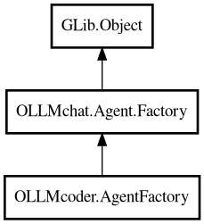

AgentFactory
Object Hierarchy:

Description:
public class AgentFactory :
Factory
Code Assistant factory.
Combines static sections from resources with dynamic context to create complete system prompts for code-assistant agents.
Content:
Properties:
Creation methods:
Methods:
- public override Object create_agent (SessionBase session)
Creates an agent instance for a specific request.
- protected override string generate_user_prompt (string user_query) throws Error
Generates the user prompt with additional context data.
- public override string get_current_cursor_position ()
Gets the cursor position for the currently active file.
- public override string get_current_line_content (string cursor_pos)
Gets the content of a specific line in the currently active file.
- public override string get_file_contents (string file)
Gets the full contents of a file.
- public override ArrayList<string> get_open_files ()
Gets the list of currently open files, sorted by modification time
(most recent first). Limited to 15 most recent files, ignoring files older than a day. Always includes the active file if it exists,
even if not in recent list.
- public override string get_selected_code ()
Gets the currently selected code from the active file.
- public override async Object? get_widget ()
Gets the UI widget for this agent.
- public override string get_working_directory ()
Returns the active project's path as the working directory for
commands. Falls back to home directory if no project is selected.
- public override string get_workspace_path ()
Gets the workspace path.
- public override string system_message (Base? handler = null) throws Error
Generates the complete system prompt for a code-assistant agent.
Inherited Members:
All known members inherited from class OLLMchat.Agent.Factory
All known members inherited from class GLib.Object
- @get
- @new
- @ref
- @set
- add_toggle_ref
- add_weak_pointer
- bind_property
- connect
- constructed
- disconnect
- dispose
- dup_data
- dup_qdata
- force_floating
- freeze_notify
- get_class
- get_data
- get_property
- get_qdata
- get_type
- getv
- interface_find_property
- interface_install_property
- interface_list_properties
- is_floating
- new_valist
- new_with_properties
- newv
- notify
- notify_property
- ref_count
- ref_sink
- remove_toggle_ref
- remove_weak_pointer
- replace_data
- replace_qdata
- set_data
- set_data_full
- set_property
- set_qdata
- set_qdata_full
- set_valist
- setv
- steal_data
- steal_qdata
- thaw_notify
- unref
- watch_closure
- weak_ref
- weak_unref